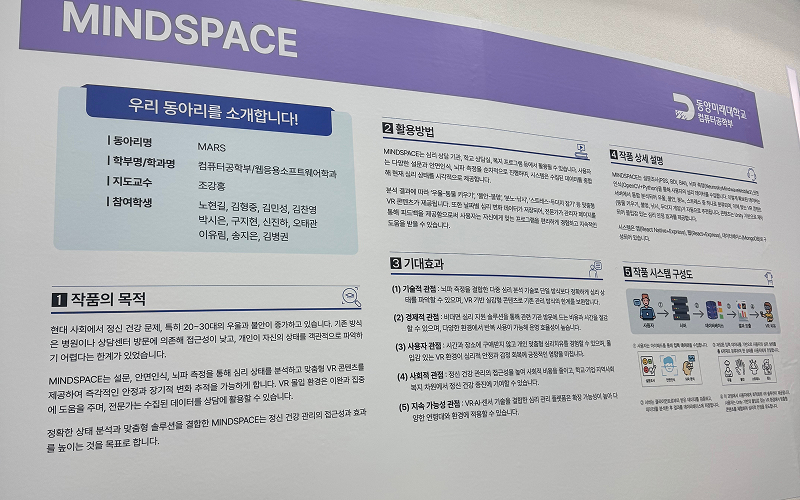

학교 프로젝트
Project 1
BabySense

졸업작품 팀 프로젝트
- 기간
- 2026.05 ~ 2026.08
- 인원
- 5명
- 역할
- 프론트엔드 (화면 설계)
- 도구
- Figma, GitHub
- 프로젝트
- 아기의 수면·수유·체온 같은 기록을 분석해서, 초보 부모에게 지금 무엇을 해야 하는지 알려주는 아기 돌봄 앱 서비스
- 담당 업무
-
- 회원가입, 아기 정보 입력, 메인 홈, 체온·증상 입력 화면 설계
- 처음 쓰는 부모도 헤매지 않도록 화면마다 버튼 하나로 다음 단계로 이어지게 구성
- 학원에서 배운 웹접근성(이미지 alt, 키보드 포커스, 제목 구조, 색 대비, aria) 적용
- 협업
- 기획·프론트엔드·백엔드·DB·AI로 역할을 나누고, GitHub에서 내 브랜치에 작업한 뒤 팀원 확인을 거쳐 합침
Project 2
생성형 AI 해커톤
 마우스를 올리면 시연 영상이 재생돼요
마우스를 올리면 시연 영상이 재생돼요
교내 해커톤
- 기간
- 2025.02.19 ~ 2025.02.20
- 결과물
- 환경 챗봇 '그린어스'
- 역할
- 아이디어 회의, 챗봇 로고 제작, 발표
- 도구
- 생성형 AI 챗봇
- 프로젝트
- 당일 나온 환경 주제에 맞춰, 팀이 제한된 시간 안에 실생활에서 쓸 수 있는 챗봇을 기획하고 만드는 교내 경진대회
- 진행 과정
-
- 사전 교육에서 챗봇의 정체성과 목표 정하기, 역할 설정, 명확한 지시문 작성법을 배움
- 팀원 모두 아이디어를 내고 함께 챗봇 방향을 정함
- 챗봇 '그린어스'의 로고를 만들고, 완성한 챗봇을 발표함
- 배운 점
- 수상은 못 했지만, AI 서비스도 누구를 위해 무엇을 하는지 먼저 정해야 결과가 달라진다는 걸 알게 됨
Project 3
Mind Space

전공동아리 MARS 프로젝트
- 기간
- 2025.06 ~ 2025.10
- 전시
- 2025 동양미래 EXPO (코엑스)
- 역할
- VR팀 · 화면 UI, 리플렛 디자인
- 도구
- Unity, Figma
- 프로젝트
- 설문·안면인식으로 감정 상태를 측정하고, 결과에 맞는 VR 게임(불멍, 낚시, 두더지, 동물 키우기)으로 마음을 돌보는 VR 심리치료 솔루션
- 담당 업무
-
- Unity 시작 화면 배경과 버튼 화면 전환 작업
- 코엑스 관람객에게 나눠 준 3단 리플렛을 Figma로 디자인
- 어려운 기술 설명은 빼고, 실제 화면과 짧은 설명으로 '무엇을 체험할 수 있는지' 바로 보이게 구성
- 성과
- 2025 제43회 동양미래 EXPO 장려상 수상 (코엑스 전시)